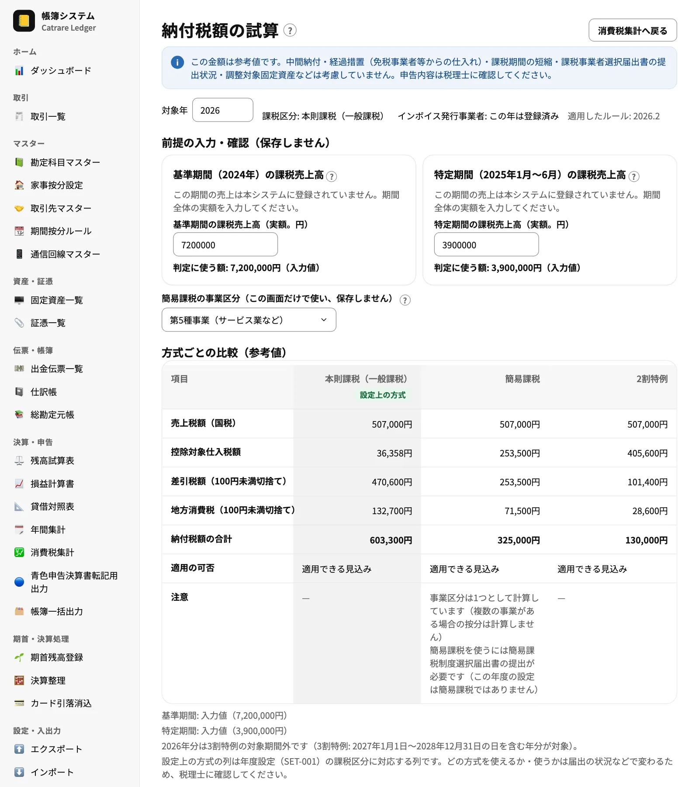

Webアプリ・公開中
LEDGER（帳簿システム）
10月に公開した版：1.5.2 〜 1.19.0（19回）
- 今月の主な変更
-
- 振替：取引の区分に「振替」を追加し、事業⇄個人・事業外の入金・事業用口座どうしの4種類のお金の動きから、事業主貸・事業主借などの2行仕訳を自動で作るようにしました。損益の集計からは外し、貸借対照表・元帳にだけ反映します
- 償却方法の選択：定額法に加えて、一括償却資産（3年均等・直接法）と少額減価償却資産の特例を選べるようにし、償却仕訳を年度締めで自動生成するようにしました
- 消費税：取引・出金伝票・固定資産・手動仕訳の明細に8種類の消費税区分を持たせ、「売上／仕入 × 区分 × 税率」の集計と、本則課税・簡易課税・2割特例の納付税額を並べる試算の画面を追加しました
- インボイス登録年の消費税：年の途中でインボイス発行事業者に登録した年は、消費税の集計と試算の期間を既定で登録日以後にし、年全体へも切り替えられるようにしました
- 帳簿一括出力：仕訳帳・総勘定元帳・残高試算表・損益計算書・貸借対照表・固定資産台帳・年間集計を、年度ごとに ZIP（CSV）または連続印刷で出力できるようにしました
- 青色申告決算書の2〜4ページ目：月別の売上・仕入、地代家賃の内訳、減価償却費の計算、期首・期末の貸借対照表など、決算書の2〜4ページ目へ転記する表と印刷用の表示を追加しました
- ダッシュボード：経費率・所得率、手元資金の月数、消費税の納付見込み、売上の取引先集中度などの指標を追加し、月別の経費内訳に固定資産の減価償却費を月割りで積み上げるようにしました
- 同じ内容の取引の登録前の確認（取引先名は NFKC 正規化して比較）、取引一覧の列見出しでの並べ替えと「詳細な条件」での絞り込み（家事按分あり・支払元・入金先）、DEDUCT への連携フォルダ出力を追加しました
- 技術のトピック
-
- 税制の数値はコードに書かない：消費税の税率・基準額・端数処理の単位は年度別のルールセットにだけ置き、国税庁の一次情報の出典と確認日を記録しています。直書きを検出する静的テストと、国税庁の手引きの設例を実ルールセットで再現する照合テストを用意しました
- 端数処理は整数で：税額は税率ごとに1回だけ丸め、税率は basis point（1万分率）の整数で持って浮動小数点を使いません。ダッシュボードの経費率・所得率も千分率の整数で丸め、2つの合計が100.0%になるようにそろえています
- 月割りの端数を年額に合わせる：減価償却費の年額 A を n か月に配るとき、k 番目の月を floor(A×k/n) − floor(A×(k−1)/n) とする累積の切捨てで配ります。月ごとの差は1円以内で、配った合計は年額と必ず一致します
- 決算書の表は1つの純関数から：青色申告決算書の各表は、画面と印刷で共用する純関数でまとめて組み立て、表どうしの金額が合わないときは警告を出します。印刷が A4 縦で正しく改ページされ、はみ出さないことを E2E で確かめています
- 既存データの移行：データベースのスキーマを更新し、既存の取引へ勘定科目の既定の区分を自動で補いました。補完の前後で年間集計・残高・年度締めのスナップショットが1円も変わらないことをテストで固定しています。古いバックアップを復元するときも同じ補完をかけます
- ZIP は自前で：帳簿 CSV は数 MB 程度で圧縮の利点が小さいため、依存ライブラリを足さず、無圧縮（stored）の ZIP を CRC-32 とヘッダーの組み立てだけで書き出しています（PKWARE APPNOTE 準拠・ファイル名は UTF-8）
- アプリ間の連携：DEDUCT との連携は File System Access API で利用者が選んだフォルダを介し、2つのアプリの IndexedDB は分けたままにしています。ファイルはスキーマで検証し、壊れたファイルや、ファイル名と中身の年度の食い違いを検出してから一覧に出します
- 主な技術
- TypeScript ／ React 19 ／ Vite ／ Dexie.js（IndexedDB）／ Zod ／ Zustand ／ Tailwind CSS v4 ＋ shadcn/ui（Base UI）／ Vitest ／ Playwright

